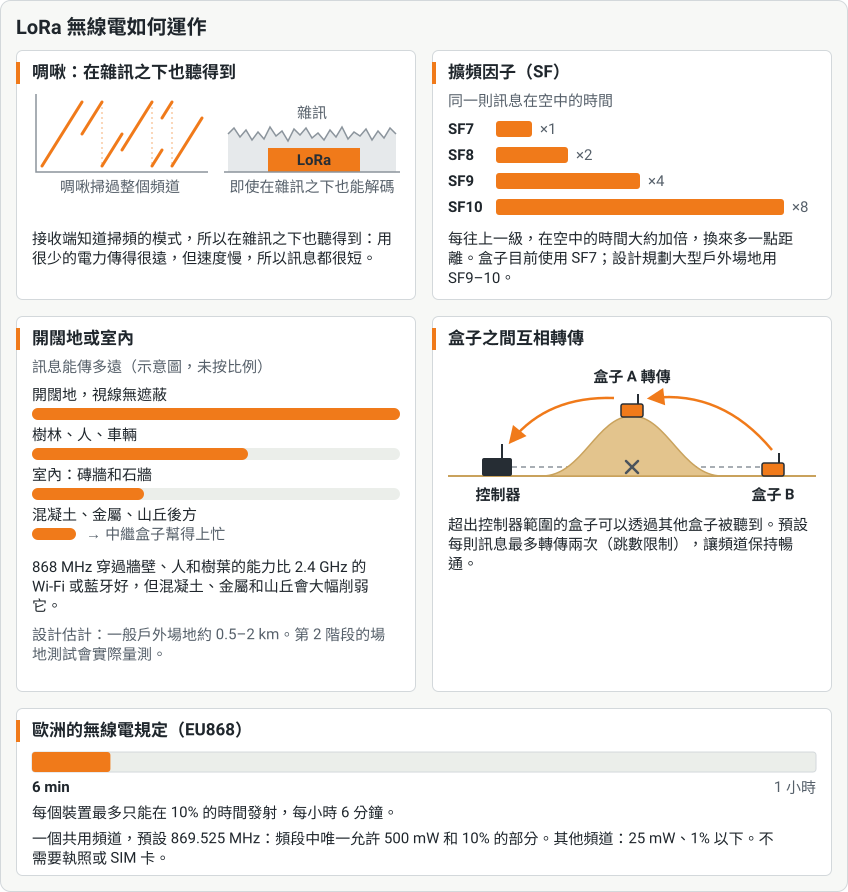

LoRa 能做什麼
LoRa 用速度換取距離：它只耗很少的電，就能把短訊息傳過整個場地，訊號穿過牆壁和樹林的能力也比 Wi-Fi 好，不過混凝土、金屬和山丘還是會擋住它。連不到控制器的盒子，可以透過其他盒子轉傳；歐洲的法規則限制每個裝置能發射的時間比例。

用哪個頻道，為什麼是 869.525 MHz
一場遊戲的所有通訊共用一個頻道。預設的 869.525 MHz 是 869.4–869.65 MHz 的中心，這是歐洲 868 MHz 頻段中唯一允許裝置以最高 500 mW 發射、最多佔 10% 時間的區段。在 868–870 MHz 的其他地方，法規只允許 1% 的時間（868.7–869.2 MHz 為 0.1%）、25 mW：大約是十分之一的發射時間，距離也短得多。868.1、868.3 和 868.5 MHz 是 LoRaWAN 的預設頻道，常常很忙。預設頻道也有人共用：LoRaWAN 閘道器會在 869.525 MHz 送出部分回覆，Meshtastic 的歐洲預設值也用它，所以在這類使用者附近，GM 可以讓控制器把每個合法頻道各聽一分鐘、挑最安靜的，隨機抽一個，或手動選擇。之後盒子會遵守所選頻道自己的限制。
無線電地區：歐洲與台灣
一個場地屬於一個無線電地區，在 GM 控制台中選一次即可。在歐洲（EU868），盒子使用上面的頻道。在台灣（AS923，920–925 MHz），NCC 的規範（LP0002）只有在頻寬至少 500 kHz 時，才讓不跳頻的單一頻道使用完整功率，所以在台灣盒子使用 500 kHz 的 LoRa（SF9，距離和歐洲差不多），天線端最多 0.5 W，預設頻道為 921.5 MHz，避開 LoRaWAN 和 Meshtastic 使用的頻道。每個盒子、USB 無線電數據機和 I/O 模組都只為一個地區而建，會拒絕其他地區的頻道，所以盒子絕不會在自己的頻段外發射；盒子會隨每場遊戲得知場地的地區。台灣地區尚未經過認證：在台灣販售的產品需要 NCC 的型式認證，以及為 920 MHz 設計的天線。這些都還沒有在空中實際測試過。
同一個協定，用在每一種裝置
Skirmesh-RF 是分層打造的，從無線電一路到控制器的 API。Field Box 執行到遊戲模式為止的所有層；Raspberry Pi 控制器把無線電的工作交給一個 USB 無線電數據機；在第 3 階段，Android 手機搭配 I/O 模組也是這樣做。連在場地 Wi-Fi 上的手機完全不需要 LoRa 無線電。
![左邊是 Skirmesh-RF 由下而上的五層：1，在一個共用遊戲頻道上的 LoRa 無線電；2，Skirmesh-RF 封包，以每場遊戲的金鑰做 AES-128-CCM 加密，用 epoch 和序號防止重送攻擊，轉傳的跳數限制（預設兩次轉傳）、ACK、TIME 信標，以及用於控制器備援切換的 CLAIM；3，以 CBOR 編碼的 HELLO、EVENT、ACK、STATE、CMD、TIME、CONFIG 和 CLAIM 訊息；4，共用的 C 核心和 Lua 遊戲模式；5，場地控制器的 REST、WebSocket 和 MQTT API、GM 控制台、記分板和加入代碼（盒子用 NFC 卡，備援控制器和第 3 階段的手機用 QR code）。右邊是每個裝置執行哪幾層。已在軟體中完成並測試、還沒在場地上用過的：Field Box（第 1 到 4 層）、USB 無線電數據機（第 1 和 2 層）和跑在 Raspberry Pi 或 PC 上的場地控制器（第 2 到 5 層），以及透過 Wi-Fi 連線、在手機上使用的 GM 控制台，它們使用第 5 層，不需要 LoRa 無線電。同樣為第 3 階段在軟體中完成的：讓 Android 手機或平板（第 2 到 4 層）有無線電的 I/O 模組（第 1 和 2 層），以及玩家 App。規劃中：衛星盒（第 1 到 4 層）。](../../img/diagrams/skirmesh-narrow-zh-tw.svg)